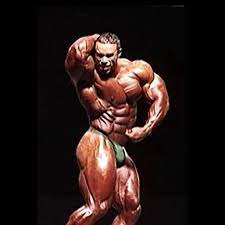
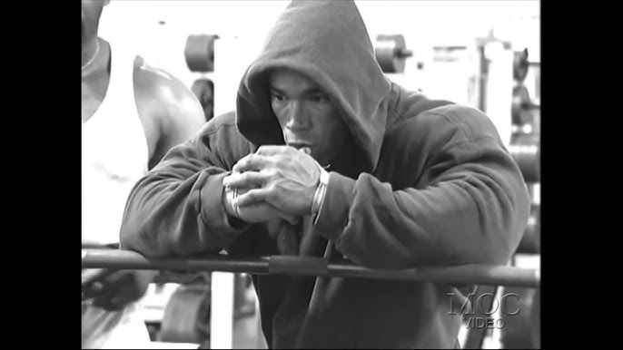
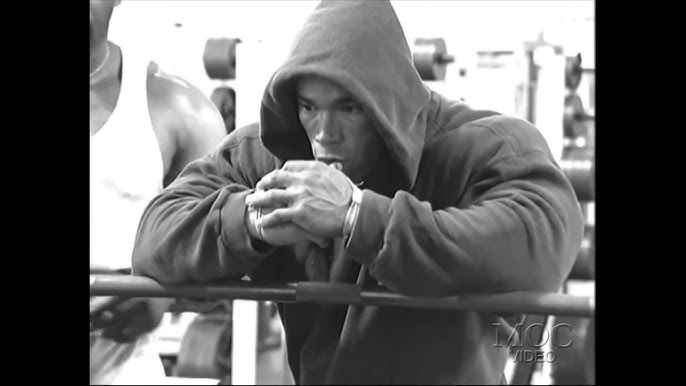

A Vida e História de Kevin Levrone:
Nascido em 16 de julho de 1964, é uma lenda viva no mundo do fisiculturismo.
Sua jornada começou em Baltimore, Maryland, onde cresceu com uma paixão pelo esporte desde jovem.
Levrone iniciou sua carreira no fisiculturismo profissional em 1991,
estreando no Mr. Olympia, um dos palcos mais prestigiosos da competição.
Levrone rapidamente ganhou destaque devido à sua impressionante genética, simetria muscular e carisma no
palco.
Ele alcançou o auge de sua carreira na década de 1990, competindo contra ícones como Dorian Yates e Flex
Wheeler.
Ao longo de sua carreira, Levrone conquistou 23 títulos profissionais, solidificando seu lugar entre os
grandes do esporte.
 

Derrotas no Mr. Olympia e a Decisão de Kevin Levrone Apesar de suas conquistas notáveis, Kevin Levrone
também
enfrentou derrotas significativas em sua busca pelo título do Mr. Olympia. Em particular, suas tentativas de
vencer o campeonato em 1995, 2000, 2002, 2003 e 2004 foram marcadas por frustrações e colocações abaixo das
expectativas. Essas derrotas, especialmente as lutas consecutivas no início dos anos 2000, levaram Levrone a
reconsiderar seu compromisso com o fisiculturismo profissional.A despeito de seu imenso talento e dedicação,
as vitórias esquivavam-se dele no palco mais importante da modalidade. Após anos de perseverança, Kevin
Levrone tomou a difícil decisão de se afastar das competições de fisiculturismo em 2003, encerrando sua
busca pelo título elusivo do Mr. Olympia.